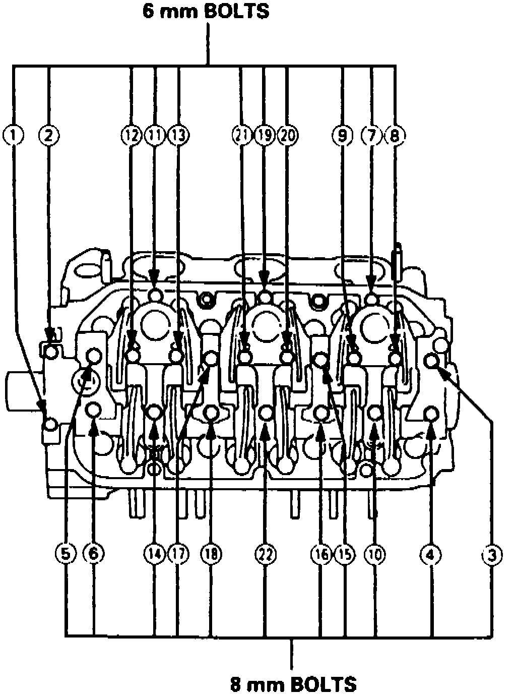
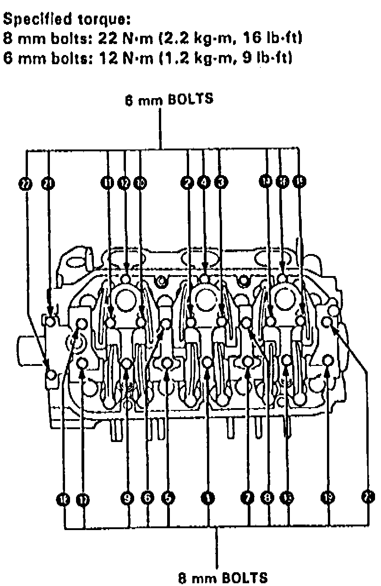

Camshaft: Service and Repair
Fig. 65 Camshaft Holder Bolt Loosening Sequence:

Fig. 66 Rocker Arm Tightening Sequence:

1. Remove cylinder head as outlined under Cylinder Head Assembly 0.
2. Remove cam holder bolts two turns at a time, in reverse order to Fig. 65.
3. When removing rocker arm assembly, do not remove cam holder bolts.
4. Ensure rocker arms are installed in same position.
5. Install camshaft, rocker arms and camshaft seals as follows:
a. Clean and lubricate cams and journals, then install camshaft and seal.
b. Install camshaft seal with open side facing inward.
c. Apply liquid gasket to head mating surfaces of No. 1 and No. 7 cam holders.
d. Set rocker arm assembly in place, then loosely install bolts, ensuring rocker arm are properly positioned on valve stems.
e. Torque bolts in sequence, Fig. 66, to specifications.
6. On models equipped with radio coded theft protection system, refer to Vehicle Damage Warnings for system disarming and arming procedures. On models equipped with airbag system, refer to Technician Safety Information for system disarming and arming procedures.